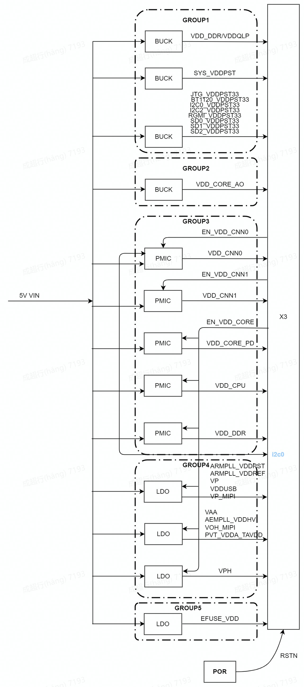
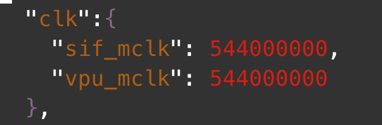

4.10. X3降功耗用户指南
4.10.1. 综述
芯片的功耗与工作电压，时钟频率以及环境温度密切相关。在负载一定的情况下电压，时钟频率，环境 温度的升高会导致功耗增加。所以这就意味着降低功耗可以从降低电压，降低时钟频率以及散热三个方 面入手。本文中提到的低功耗方法主要是对时钟频率和电压的调节和控制。 关于负载，负载减轻也可以降低功耗，客户可根据自己的产品优化电路。 另外低功耗会对性能有负面影响，所以根据使用场景来选择是否要进入低功耗。
4.10.2. 电源域及时钟介绍配置
4.10.2.1. 电源域

如上图所示X3共有5个电源域，group1-group5，根据在休眠状态下是否断电又可以分为always-on和shutdown两类：
| group1 | group2 | group3 | group4 | group5 | |
|---|---|---|---|---|---|
| sleep | always-on | always-on | shutdown | shutdown | shutdown |
详细介绍请查看：《DT-2500-2-X3M-Datasheet-V1.6.pdf》：4.3节和第11章，硬件文档请参考《X3 Hardware Design Guide 20200115b.pdf》。 此外X3的各路power group并不是全部由PMIC提供，目前X3 SOM使用PMIC和DCDC共同为X3 SOM供电，具体可查看硬件原理图。
4.10.2.2. 对power group的控制
使用PMIC控制的power groups 可以由下面两种方式进行控制，以下方式以PMIC:AXP15060为例。 注意：不要把电压调的太高，容易损伤芯片。具体的电压范围可查看《X3 Hardware Design Guide 20200115b.pdf》和《DT-2500-2-X3M-Datasheet-V1.6.pdf》。
方式1：通过linux kernel的regulator： 采用linux kernel现用的regulator 架构可实现在kernel中对各路电的控制。具体的使用方法请查阅：《AN-2521-1-B-X3J3平台PMIC驱动修改指导》
方式2：用户空间通过i2c-tool控制： 这里首先要查阅axp15060数据手册以及硬件原理图找到目标power rail所对应的寄存器进行控制。 比如，对VDDQ1.1v 电压进行调节。通过查看硬件原理图和axp15060数据手册得知，这路电用的是axp15060的dcdc5，用万用表测量出这路电目前是1.117v，查阅数据手册得知step的跨度是10mv，读寄存器得如下：
root@j3dvbx3-samsung1G-3200:~# i2cget -f -y 0 0x37 0x17
0x9e
如果想让DCDC5的电压降10mv，那么就将0x17寄存器的值减1，即0x9d,如下设置后DCDC5的电压将变成1.107mv：
root@j3dvbx3-samsung1G-3200:~# i2cset -f -y 0 0x37 0x17 0x9d
root@j3dvbx3-samsung1G-3200:~# i2cget -f -y 0 0x37 0x17
0x9d
4.10.2.3. 时钟
X3 SOC拥有7组PLL分别是：CPUPLL(ARMPLL),SYSPLL,CNNPLL,DDRPLL,PERIPLL,VIOPLL,VIOPLL2。它们的时钟均来自24M晶振，SOC的各个子模块的时钟又分别是从这7个PLL中细分出来。
ARMPLL: 为 Cortex-A53 的四个核提供时钟；
DDRPLL：为 DDR 子系统提供时钟；
VIOPLL：为 VIO 子系统提供时钟；
VIOPLL2：为 Camera Sensor，MCLK，IAR Display Pixel 提供时钟；
CNNPLL：为 BPU 子系统提供时钟；
PERIPHPLL：为外设子系统提供时钟；
SYSPLL：为 cpu 子系统提供时钟。
X3的clk驱动采用的是linux kernel的clk现有架构，代码在：kernel/drivers/clk/hobot/，dts为hobot-clkxj3.dtsi。
4.10.3. 降低功耗
4.10.3.1. CPU降低功耗
通过改变cpu的governor来控制cpu频率，这里主要是对armpll频率的调控。
echo powersave > /sys/devices/system/cpu/cpufreq/policy0/scaling_governor
echo ondemand > /sys/devices/system/cpu/cpufreq/policy0/scaling_governor
“powersave”会将cpu的频率降到最低，相应的功耗也会最低，但是cpu的处理速度也将会变成最低。 “ondemand”会根据cpu的当前负载动态的去设置cpu的频率，这种方式可以实现性能和功耗的相对平衡。
除此之外将cpu core offline也会降低功耗，但是cpu core的offline，online较为耗时，会影响性能，请注意这点。除了启动核core0之外，其它三个都可以进行offline/online操作：比如将cpu1 offline/online
cd /sys/devices/system/cpu
# offline cpu1
echo 0 > cpu1/online
root@x3dvbx3-samsung1G-3200:/sys/devices/system/cpu# cat offline
1
#online cpu1
echo 1 > cpu1/online
root@x3dvbx3-samsung1G-3200:/sys/devices/system/cpu# cat offline
注意：CPU进入powersave模式或offline模式时，CPU性能会大幅降低。
4.10.3.2. BPU低功耗
通过改变bpu的governor来控制bpu的频率，这里主要是对cnnpll频率的调控：
echo powersave > /sys/devices/system/bpu/bpu0/devfreq/devfreq1/governor
echo simple_ondemand > /sys/devices/system/bpu/bpu0/devfreq/devfreq1/governor
“powersave”会将bpu的频率降到最低，相应的功耗也会最低，但是bpu的处理速度也将会变成最低。 “simple_ondemand”会根据bpu的当前负载动态的去设置bpu的频率，这种方式可以实现性能和功耗的相对平衡。 除此之外，bpu的两个core均支持独立的断电和上电，可根据bpu的使用情况来决定是否对bpu断电：
enable：
echo 1 > /sys/devices/system/bpu/bpu0/power_enable
echo 1 > /sys/devices/system/bpu/bpu1/power_enable
disable：
echo 0 > /sys/devices/system/bpu/bpu0/power_enable
echo 0 > /sys/devices/system/bpu/bpu1/power_enable
注意：BPU进入powersave模式或BPU core断电时，算法相关应用不工作。
4.10.3.3. media模块降低功耗
media模块的低功耗也可以通过设置工作频率来实现：修改vio的配置文件clk字段。单位：HZ 
提供的sysfs接口为：/sys/module/hobot_dev_ips/parameters/sif_mclk_freq和/sys/module/hobot_vpu/parameters/vpu_clk_freq。具体使用方法可参考vio的demo代码。 HAPI 接口int HB_VIN_SetDevMclk(uint32_t devId, uint32_t devMclk, uint32_t vpuMclk)。具体使用方法可参考HAPI的demo程序及HAPI接口说明文档。
注意：执行此操作时确保 vio 处于不工作状态。